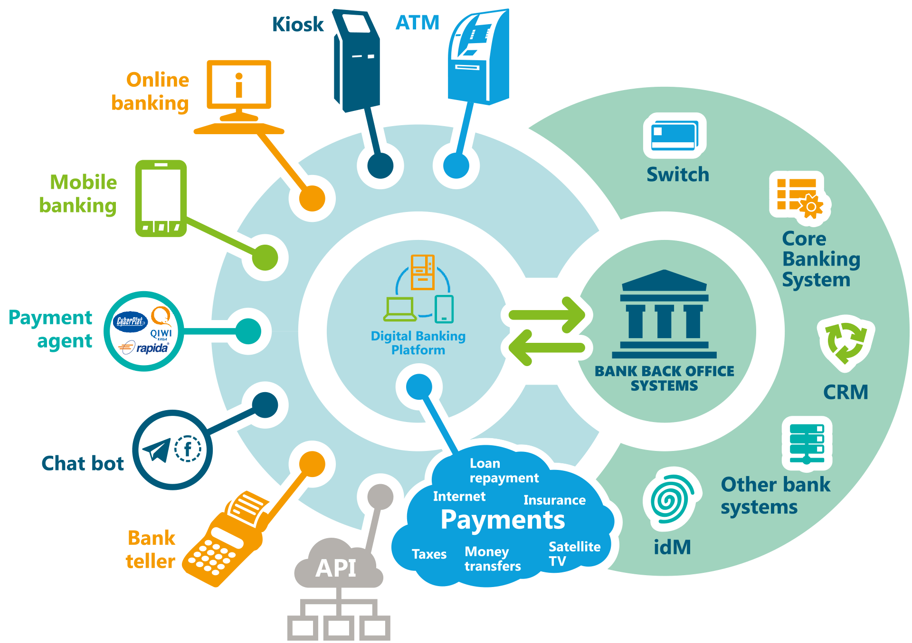

At Midas, we believe your core banking system should be more than just a transactional backbone – it should be a catalyst for innovation, agility, and exceptional customer experiences. Our expert IT consulting team provides profound and specialized expertise in navigating the complexities of Core Banking Transformation. We partner with you to envision a future-ready core, meticulously guiding you through strategic planning, platform selection, seamless implementation, and secure data migration. With a value-driven ethos and an unwavering commitment to tangible results, we empower you to transcend the limitations of legacy systems and build a dynamic foundation for sustainable growth and competitive advantage.
Core Banking Transformation
Core Banking Transformation
Unlock the Potential of Your Banking Operations with Strategic Core Transformation.
At Midas, we understand that your core banking system is the engine of your institution. Our dedicated team of IT consulting experts possesses profound and specific expertise in navigating the intricacies of Core Banking Transformation. From strategic planning and system selection to seamless implementation and data migration, we leverage a value-driven approach and an unwavering commitment to results. We empower you to transform your core into a future-ready foundation that fuels growth, enhances customer experiences, and delivers impactful success.

- Unleashed Innovation: Establish a flexible and modern core that enables rapid development and deployment of new products and services.
- Enhanced Agility and Responsiveness: Gain the ability to adapt quickly to evolving market demands and regulatory changes.
- Superior Customer Experiences: Deliver personalized, seamless interactions across all channels, fostering greater satisfaction and loyalty.
- Optimized Operational Efficiency: Streamline processes, automate tasks, and reduce operational overhead for significant cost savings.
- Data-Driven Insights: Unlock the power of your data with improved quality, accessibility, and advanced analytics capabilities for informed decision-making.

- Improved Data Integrity and Governance: Establish a robust data management framework for accurate reporting and compliance.
- Strengthened Security and Compliance: Implement robust, future-proof security measures and ensure adherence to evolving regulatory landscapes.
- Future-Proof Scalability: Build a core infrastructure that can seamlessly handle future growth and increasing transaction volumes without disruption.
- Reduced Technical Debt: Modernize or replace outdated systems, mitigating risks and lowering long-term maintenance costs.
- Optimized Total Cost of Ownership: Implement efficient systems and processes to reduce long-term operational and maintenance expenses.